Видео из текста
Видео из текста: 4 сервиса и 2 российских
Здесь шесть сервисов, в которых можно попробовать сделать видео из текста: четыре зарубежных и два российских. Для каждого есть ссылка и условия бесплатного доступа. Ниже приведены примеры запросов и инструкции для первого ролика. Генерация и скачивание готового файла - разные возможности: ограничения указаны отдельно. Тарифы и лимиты актуальны на 25.09.2026
Тарифы и лимиты могут меняться
1. ZSKY AI
Генерирует короткое видео и изображение по тексту
Открыть: https://zsky.ai/
Бесплатно: Безлимитные генерации изображений и видео, без карты. Пятисекундное видео создаётся по текстовому запросу без дополнительных настроек, готовый файл можно скачать бесплатно
Для чего брать: Короткие сцены и быстрые пробы без счётчика
Звук: Можно загрузить свою аудиодорожку, чтобы видео подстраивалось под неё, или описать нужные звуки в запросе и сгенерировать их вместе с видео
Подвох: Общая очередь на генерацию. В конце ролика есть чёрная заставка ZSKY на 1,5-2 секунды. Её можно обрезать в любом видеоредакторе
Хранение: Бесплатный тариф действует без ограничения по сроку. Созданные видео и изображения хранятся в галерее 7 дней. Надпись «7 DAYS LEFT» относится к сроку хранения файла. Скачай понравившийся ролик, чтобы сохранить его у себя
Водяной знак: Поверх изображения нет, заставка в конце. Карта: Нет. VPN: страница открывается с VPN
Источники условий: тарифы, хранение файлов, работа со звуком и языки запросов, условия на 26.09.2026
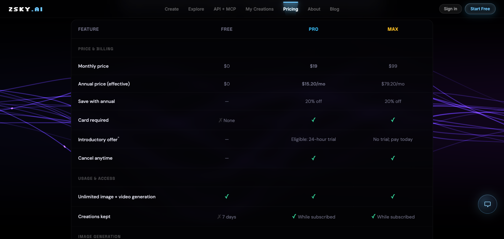
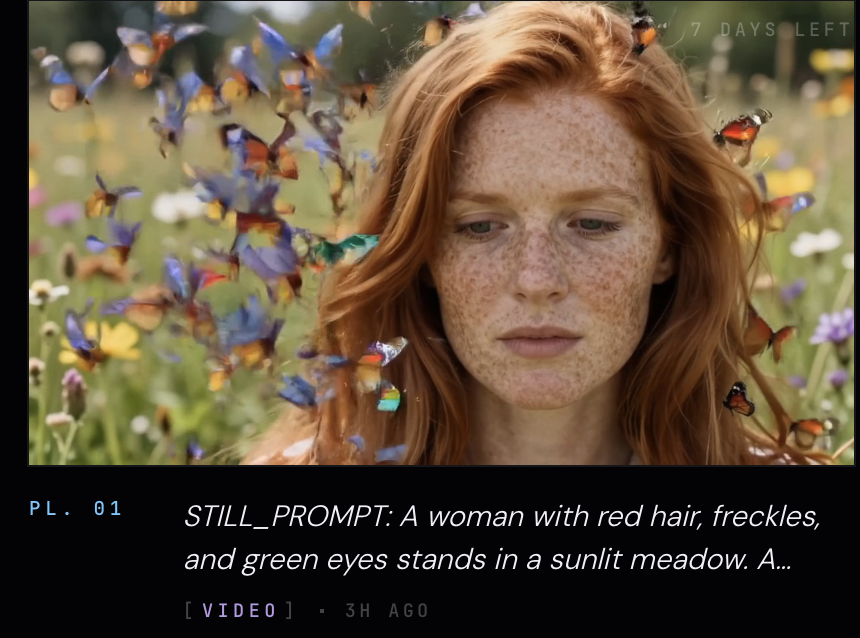
Промпт для ZSKY AI
Короткий запрос для сцены с девушкой и бабочками. ZSKY принимает запросы на русском и английском
Рыжеволосая девушка с веснушками и зелёными глазами стоит на солнечном лугу. Вокруг неё разноцветные бабочки, которые взлетают вверх. Девушка неподвижна, камера статична. Мягкий дневной свет и весенний звуковой фон
2. Kling
Превращает описание сцены в короткое видео
Открыть: https://kling.ai/
Бесплатно: Есть бесплатный доступ к генерации видео. Количество доступных кредитов посмотри в своём аккаунте. Ежедневные бонусы для подписчиков действуют во время акций
Для чего брать: Когда нужен отдельный выразительный кинокадр
Подвох: На бесплатном видео водяной знак. Перед генерацией посмотри остаток кредитов в своём аккаунте
Водяной знак: Да. Карта: Не указано. VPN: страница открывается без VPN
Источники условий: бесплатная генерация и водяной знак, правила кредитов, условия на 25.09.2026
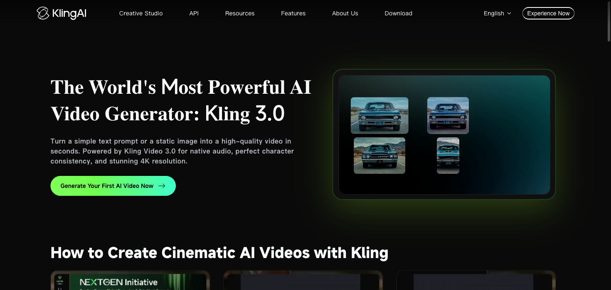
Промпт для Kling
Вертикальный кинематографичный кадр 9:16. Ночной трамвай медленно едет по мокрой улице, отражения фонарей скользят по рельсам. Камера плавно следует сбоку, один непрерывный план, реалистичный свет, без текста
3. Fliki
Создаёт раскадровку: последовательность картинок под твою озвучку, с субтитрами или без них
Открыть: https://fliki.ai/
Бесплатно: Free forever: 3 кредита в месяц, экспорт до 1 минуты в 720p, без карты
Для чего брать: Оформить свою озвучку изображениями. Можно выбрать стиль картинок: реалистичный или рисованный, как в примере ниже
Подвох: На бесплатном тарифе получаешь картинки под свою озвучку. Субтитры можно оставить или отключить. Оживить эти картинки, чтобы персонажи и объекты двигались, в Free нельзя. Для этого нужны платный тариф и кредиты на AI video clips
Водяной знак: Да. Карта: Нет. VPN: страница открывается без VPN
Источники условий: тарифы и справка Fliki, условия на 26.09.2026
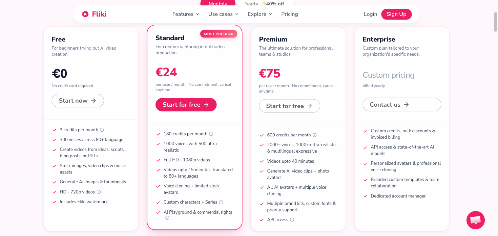
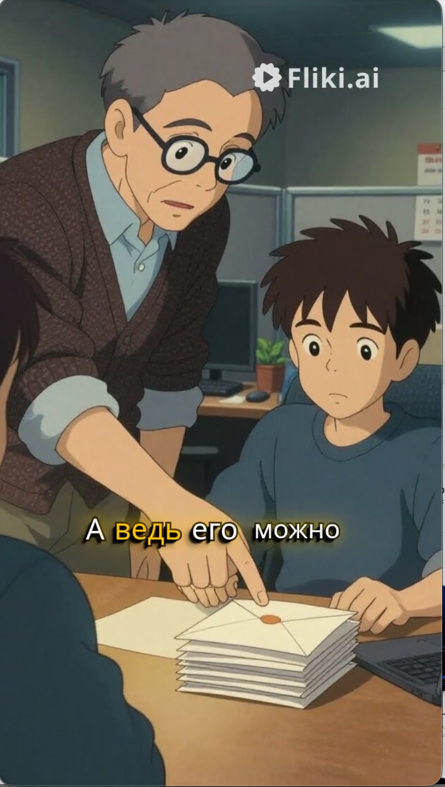
Раскадровка под свой голос
Загрузи свою озвучку и выбери стиль изображений. Fliki соберёт раскадровку: картинки сменяют друг друга под твой голос. Субтитры можно отключить, если они не нужны
Водяной знак
На бесплатном экспорте заметный белый логотип Fliki.ai в правом верхнем углу
Запись экрана
Если в предпросмотре нет логотипа, можно записать видео с экрана. Это подойдёт, если качества предпросмотра и записи достаточно для твоей задачи
4. Steve AI
Для обучающего ролика можно перейти из Steve AI в редактор Animaker. Бесплатный результат состоит из картинок по сценарию
Открыть: https://www.steve.ai/
Бесплатно: В Steve AI тариф Free даёт 5 видеокредитов в месяц, 50 минут AI-аватара и речи в месяц, ограниченные стили
Для чего брать: Обучающая раскадровка: иллюстрации и подписи по сценам твоего сценария
Подвох: Сцены могут оставаться неподвижными картинками. Для их оживления редактор предлагает подписку через кнопку «Upgrade to Animate». На бесплатном видео есть водяной знак
Скачивание: Обучающий ролик в Animaker можно скачать в MP4 с водяным знаком
Водяной знак: В Animaker большая плашка «Made with Animaker» в правом нижнем углу. Карта: Для пробного входа не нужна. VPN: страница открывается с VPN
Источники условий: таблица тарифов и страница Photo Video Maker, условия на 25.09.2026
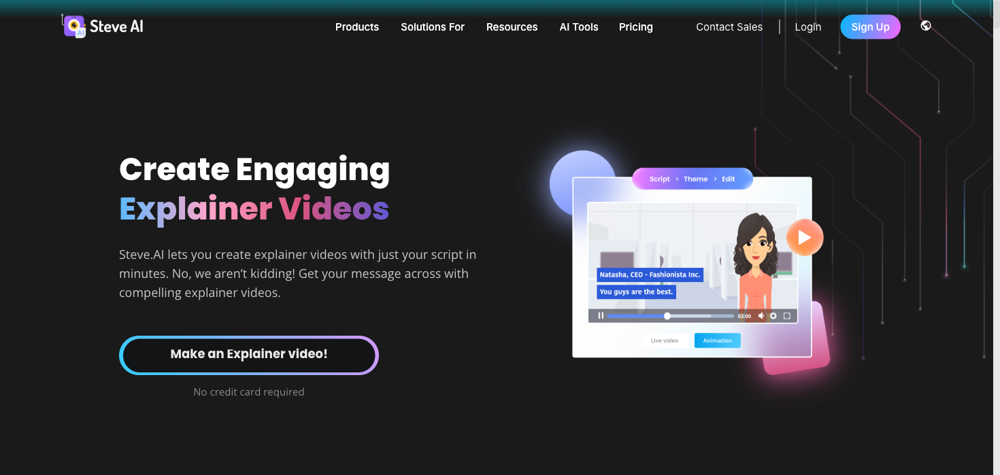
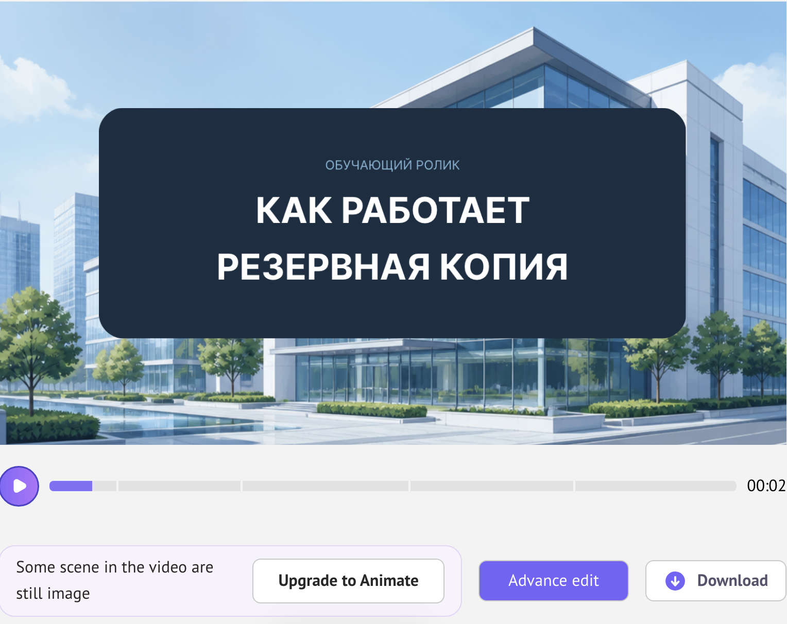
Обучающие картинки
По сценарию получается раскадровка с иллюстрациями и подписями. Картинки могут оставаться неподвижными
Анимация по подписке
Под предпросмотром указано, что часть сцен состоит из статичных картинок. Кнопка «Upgrade to Animate» предлагает перейти на подписку для их оживления
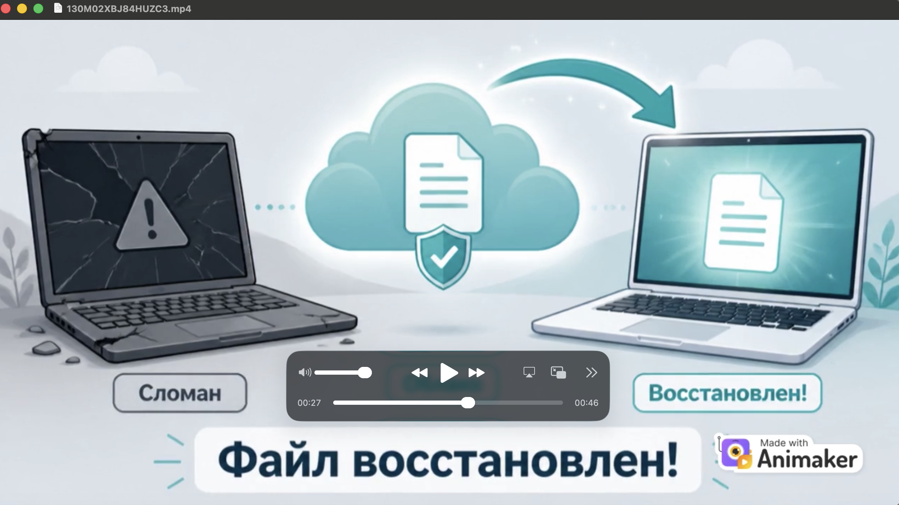
Водяной знак
В готовом файле большая плашка «Made with Animaker» в правом нижнем углу. Она накладывается поверх изображения
Запись без знака
Предпросмотр до скачивания можно записать с экрана без водяного знака, если его качества достаточно для твоей задачи
Запрос для обучающих сцен
Сделай короткую обучающую раскадровку на русском: «Как работает резервная копия». Сцена 1: файл на ноутбуке. Сцена 2: копия уходит в облако. Сцена 3: ноутбук ломается, файл восстанавливается из облака. Добавь короткие подписи
И наши
Ещё два российских сервиса для видео из текста: Шедеврум и Kandinsky в GigaChat. Для Шедеврума нужен Яндекс ID, для GigaChat - Сбер ID
5. Шедеврум
Создаёт короткие видео по текстовому запросу в приложении
Открыть: веб-версию Шедеврума или приложение для iPhone и iPad. Ссылка на сайт может открыть ленту чужих работ
Бесплатно: В веб-версии можно сделать 10 видеогенераций в день, в приложении дневного ограничения нет
Для чего брать: Быстро проверить визуальную идею на русском языке
Подвох: Чтобы сохранить видео в MP4, его нужно опубликовать. Некоммерческое использование разрешено с указанием источника; для коммерческого требуется разрешение Яндекса
Как начать в приложении: Войди через Яндекс ID, в нижнем меню выбери «Видео», вставь запрос из блока ниже и нажми «Создать». Выбери первый кадр и нажми «Создать видео». После публикации открой пост и сохрани MP4. Пошаговая справка Яндекса
Водяной знак: Не указано. Карта: Вход через Яндекс ID; требование карты не указано. VPN: страница открывается без VPN
Источники условий: справка Шедеврума и разбор Яндекс Практикума, условия на 25.09.2026
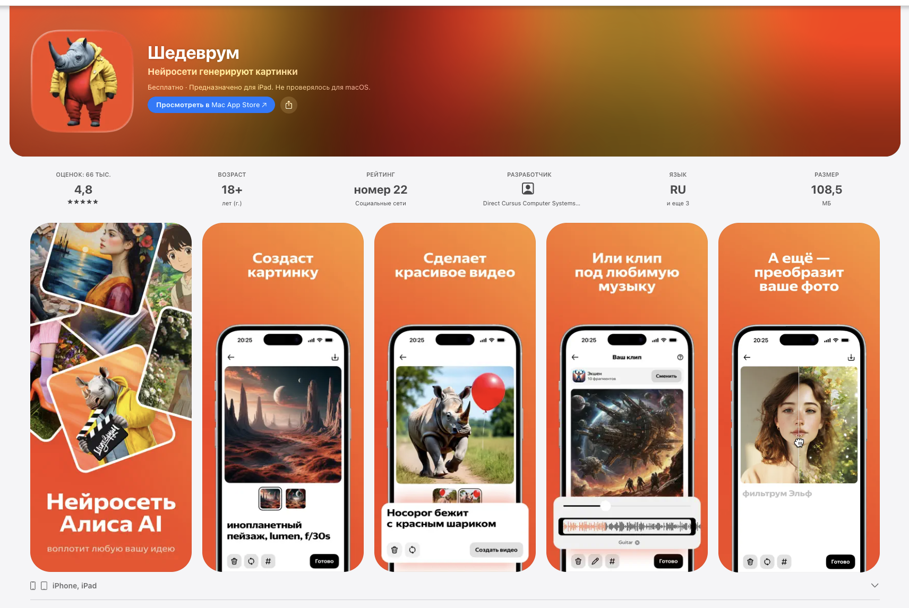
Промпт для Шедеврум
Создай короткое вертикальное видео: бумажный кораблик плывёт по луже после дождя, вокруг отражаются вечерние огни. Камера медленно приближается к кораблику, мягкое движение воды, без людей и надписей
6. Kandinsky в GigaChat
Генерирует короткое видео по тексту или изображению
Открыть: https://giga.chat/
Бесплатно: Ролики доступны бесплатно после входа через Сбер ID. Число запросов ограничено
Для чего брать: Сделать русскоязычную сцену без оплаты подписки
Подвох: Нужен Сбер ID. Если запросы закончились, придётся подождать или пригласить друзей
Как начать: Войди через Сбер ID, открой «Полезное» → «Создать видео», выбери генерацию по тексту и формат 9:16. Вставь запрос из блока ниже и запусти генерацию. Готовое видео можно скачать кнопкой в левом верхнем углу
Водяной знак: Не указано. Карта: нет, нужен Сбер ID. VPN: страница открывается без VPN
Источник условий: официальная страница сервиса, условия на 25.09.2026
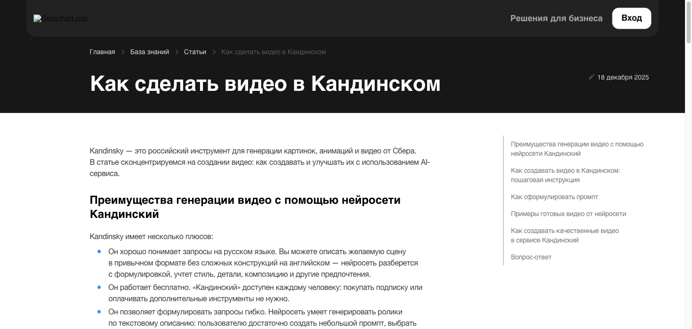
Промпт для Kandinsky в GigaChat
Создай вертикальное видео 9:16: одинокий красный зонтик лежит на пустой городской скамейке после дождя. Камера плавно отъезжает, на мокрой дорожке отражаются фонари. Реалистичная съёмка, спокойное движение, без текста и людей
Сравнение
В ZSKY можно бесплатно сгенерировать видео и скачать файл. У Шедеврума нет дневного лимита в приложении. Условия скачивания различаются по сервисам и тарифам
| Сервис | Что бесплатно | Водяной знак | VPN · 26.09.2026 | Карта |
|---|---|---|---|---|
| ZSKY AI | Безлимит, видео до 5 с, скачивание | Без плашки поверх видео; заставку в конце можно обрезать | Открывается с VPN | Нет |
| Kling | Генерация видео, доступные кредиты в аккаунте | Да | Открывается без VPN | Не указано |
| Fliki | 3 кредита/мес, до 1 мин; раскадровка под свою озвучку, субтитры по желанию | Заметный логотип справа сверху | Открывается без VPN | Нет |
| Steve AI | 5 видеокредитов/мес в Steve AI; обучающие картинки в Animaker, оживление по подписке | Большая плашка Made with Animaker справа снизу; предпросмотр можно записать без знака | Открывается с VPN | Нет для пробного входа |
| Шедеврум | 10 видео/день в веб-версии | Не указано | Открывается без VPN | Вход через Яндекс ID |
| Kandinsky в GigaChat | Бесплатно, число запросов ограничено | Не указано | Открывается без VPN | Нет, нужен Сбер ID |
Информация о доступе актуальна на 26.09.2026
Источники
Тарифы, условия скачивания и инструкции - на официальных страницах сервисов. Лимиты Шедеврума также описаны в разборе Яндекс Практикума
Как страницы выглядят на телефоне
Шесть сервисов на снимках от 26.09.2026. На телефоне ряд прокручивается вправо
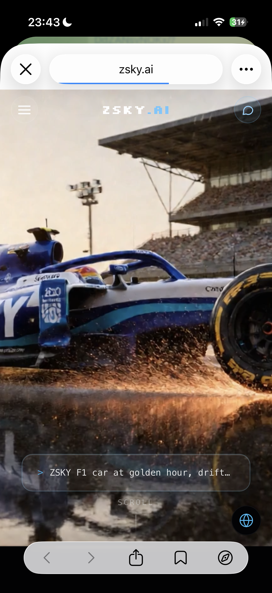
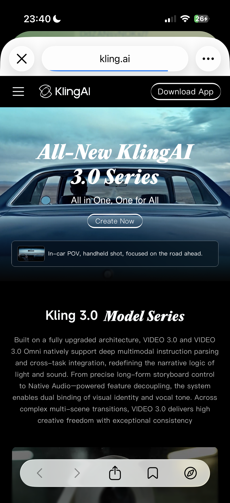
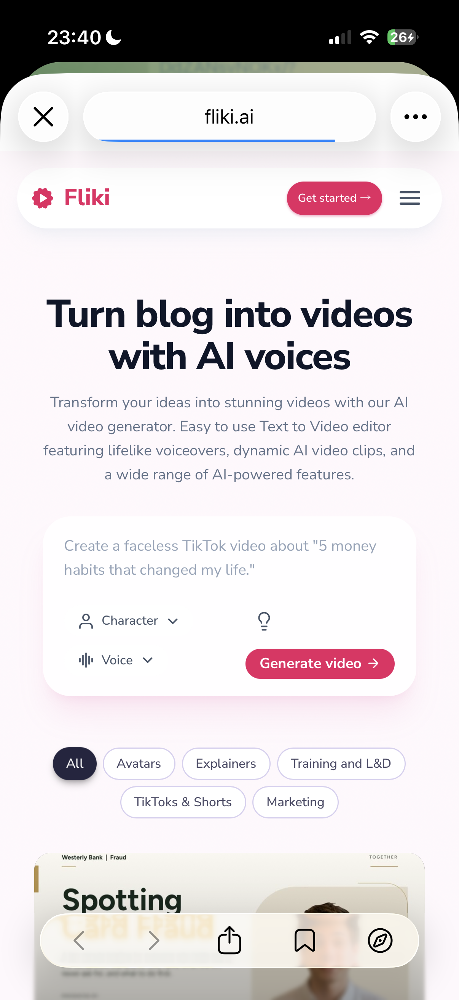
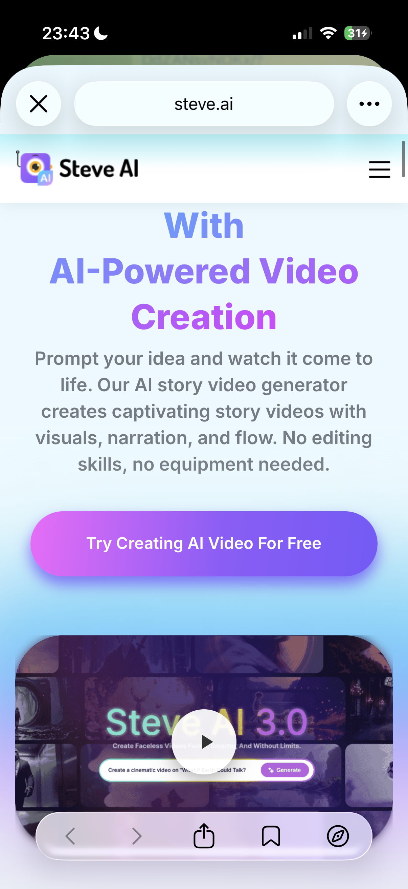
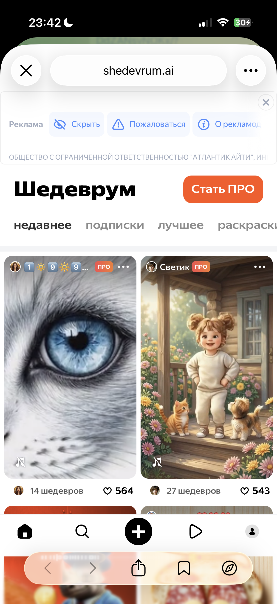
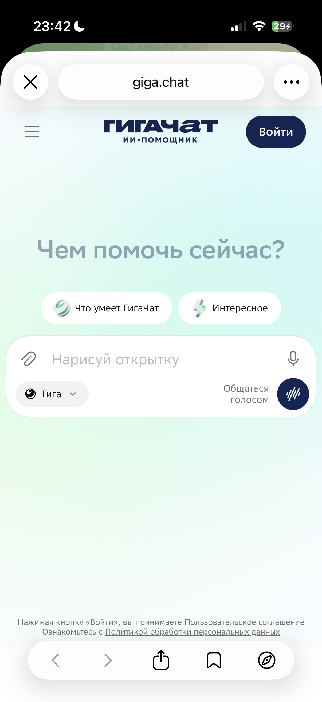
Бесплатный практикум
Теперь выбери задачу для своего ролика
На ИИ-Лагере показывают, как использовать ИИ-инструменты для своего проекта и проверять результат на практике
На ИИ-Лагерь